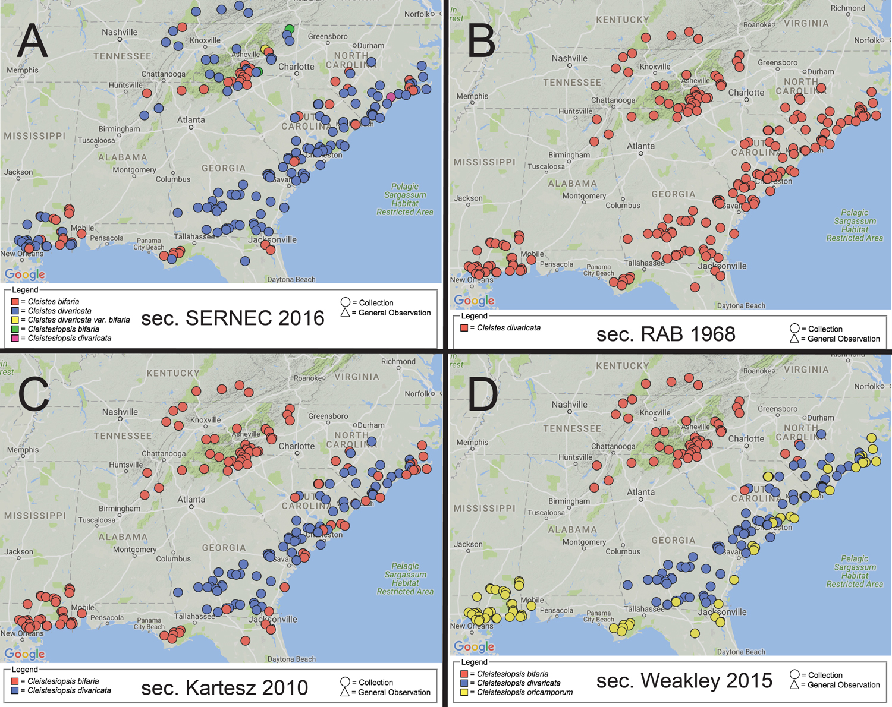

Biodiversity Informatics is the application of informatics techniques to biodiversity information for improved management, presentation, discovery, exploration and analysis. For example, ecological niche modeling refers to the process of using computer algorithms to predict the distribution of species in geographic space on the basis of a mathematical representation of their known distribution in environmental space.
The goal of this project is to implement an existing ecological niche model as a so-called tale in the WholeTale execution environment, and then study the reproducibility of the model outputs, depending, e.g., on the chosen input taxonomies used for the input data. The choice of an underlying taxonomy can lead to rather different species occurrence maps (Franz et al., 2016), which in turn is likely to influence the reproducibility of niche model outputs based on those data (see, e.g., Peterson et al.,1999 for an introductory exposition of the problem).
In this project, you will adopt an existing niche model and implement it, as a Jupyter-based Python notebook or an RStudio notebook in the WholeTale environment. Through different input datasets, you will compare different model outputs, with the goal to better understand the computational reproducibility and the semantic reproducibility of biodiversity studies that use taxonomically annotated input data.
{:.centered-image}
"Where do these endangered orchid species occur?" - visualizing taxonomic variations for aggregated herbarium data. Mappings for the same 250 SERNEC specimens according to four distinct taxonomies: (A) sec. SERNEC (2016) 'consensus', (B) sec. Radford et al. (1968), (C) sec. Kartesz (2010), (D) sec. Weakley (2015). In A, C, and D, unequal sets of specimens labeled as bifaria are red; those labeled as divaricata are blue. In B, all specimens are identified as divaricata, and hence a query for bifaria would not return any specimens.
Primary Mentor: Bertram Ludäscher, School of Information Sciences & NCSA, University of Illinois, Urbana-Champaign
Secondary Mentor(s): Nico Franz, Biodiversity Knowledge Integration Center, School of Life Sciences, Arizona State University